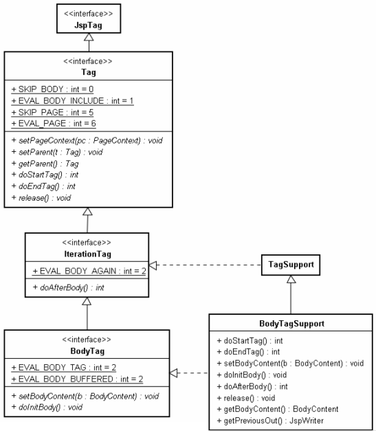
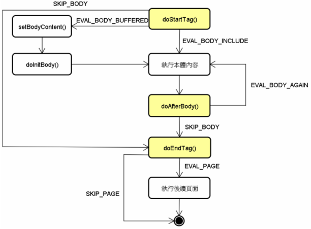

|
|
如果想要在本體執行過後，取得執行的結果並作適當處理該如何進行？例如實作一個 處理標籤屬性與本體 的<f:toUpperCase>標籤？只是繼承TagSupport的話沒辦法達到這個目的！你可以繼承javax.servlet.jsp.tagext.BodyTagSupport類別來實作，先來看看其類別架構：  在上圖中多了BodyTag介面，其繼承自IterationTag介面，新增了setBodyContent()與doInitBody()兩個方法，而BodyTagSupport則繼承自TagSupport類別，將doStartTag()的預設傳回值改為EVAL_BODY_BUFFERED，並針對BodyTag介面作了簡單的實作。 在繼承BodyTagSupport類別實作自訂標籤時，如果doStartTag()傳回了EVAL_BODY_BUFFERED，則會呼叫setBodyContent()方法而後呼叫doInitBody()方法，接著再執行標籤本體，也就是流程將變成以下：  基本上，在使用BodyTagSupport實作自訂標籤時，並不需要去重新定義setBodyContent()與doInitBody()方法，只需要知道這兩個方法執行過後，在doAfterBody()或doEndTag()方法中，就可以透過getBodyContent()取得一個BodyContent物件（Writer的子物件），這個物件中包括本體內容執行後的結果，例如透過BodyContent的getString()方法，就可以字串的方式傳回執行後的本體內容。 如果要將加工後的本體內容輸出使用者的瀏覽器，通常會在doEndTag()中使用pageContext的getOut()取得JspWriter物 件，然後利用它來輸出內容至使用者的瀏覽器。如果在doAfterBody()中使用pageContext的getOut()方法所取得的物件，與 getBodyContent()所取得的其實是相同的物件。如果在doAfterBody()中，要取得與doEndTag()中透過 pageContext的getOut()取得的JspWriter物件，則必須透過BodyContent的getEnclosingWriter()方法。 原因可以在JSP轉 譯後的Servlet程式碼中找到。如果doStartTag()傳回EVAL_BODY_BUFFERED，則會使用PageContext的 pushBody()將目前的JspWriter置入堆疊中，並傳回一個BodyContent物件，而後呼叫setBodyContent()並傳入這 個BodyContent物件，然後呼叫doInitBody()方法，而在呼叫doEndTag()方法前，如果先前doStartTag()傳回 EVAL_BODY_BUFFERED，則會呼叫PageContext的popBody()，將原本的JspWriter從堆疊中取出。 以下使用BodyTagSupport類別來實作出 處理標籤屬性與本體 的<f:toUpperCase>標籤處理器作為示範： package cc.openhome; 在這邊於doEndTag()中透過getBodyContent()取得BodyContent物件，並呼叫其getString()取得執行過後的標 籤本體內容，再進行轉字母為大寫的動作。轉換後的本體內容，則透過pageContext的getOut()取得JspWriter進行輸出。 記得在TLD檔案中定義標籤：
<?xml version="1.0" encoding="UTF-8"?> 接著就如同 處理標籤屬性與本體 的示範，可以如下使用這個標籤： <f:toUpperCase>
<f:forEach var="name" items="${names}"> ${name} <br> </f:forEach> </f:toUpperCase> |